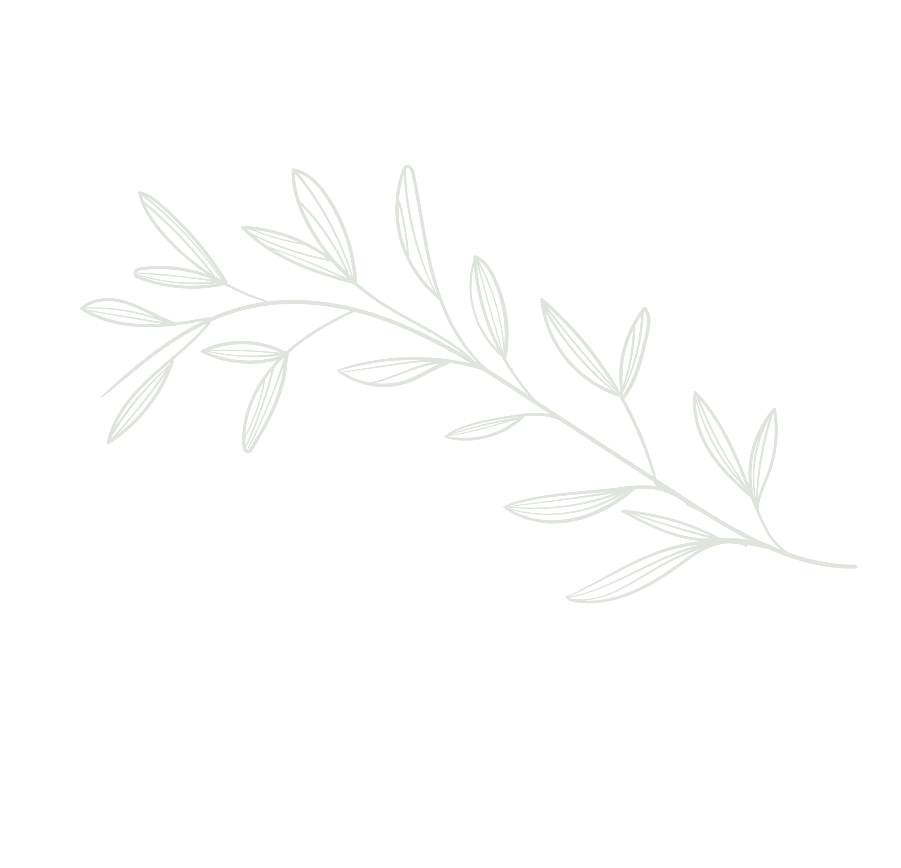
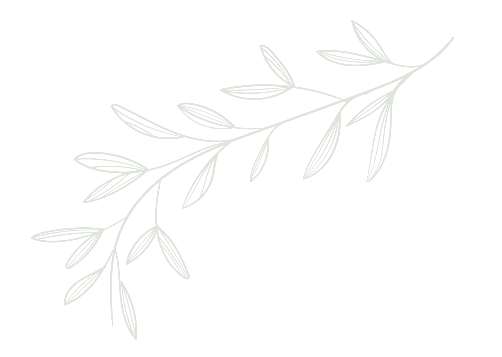
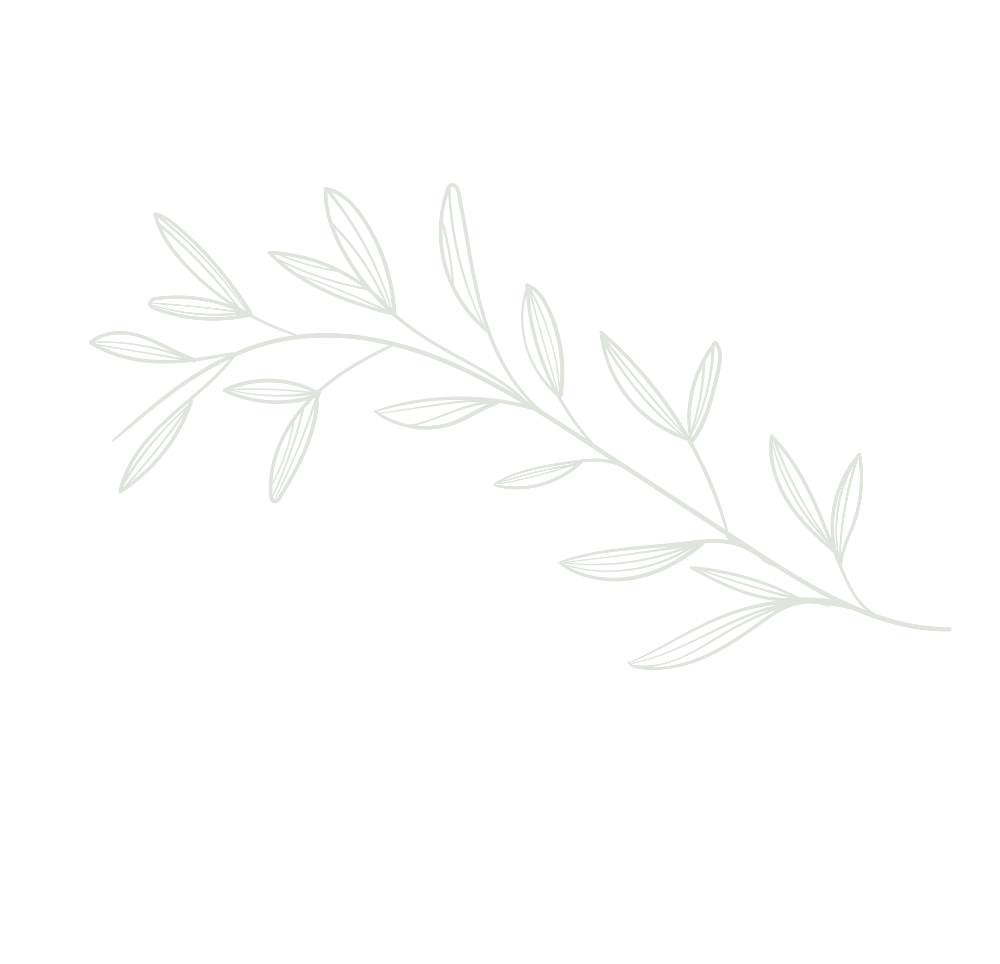
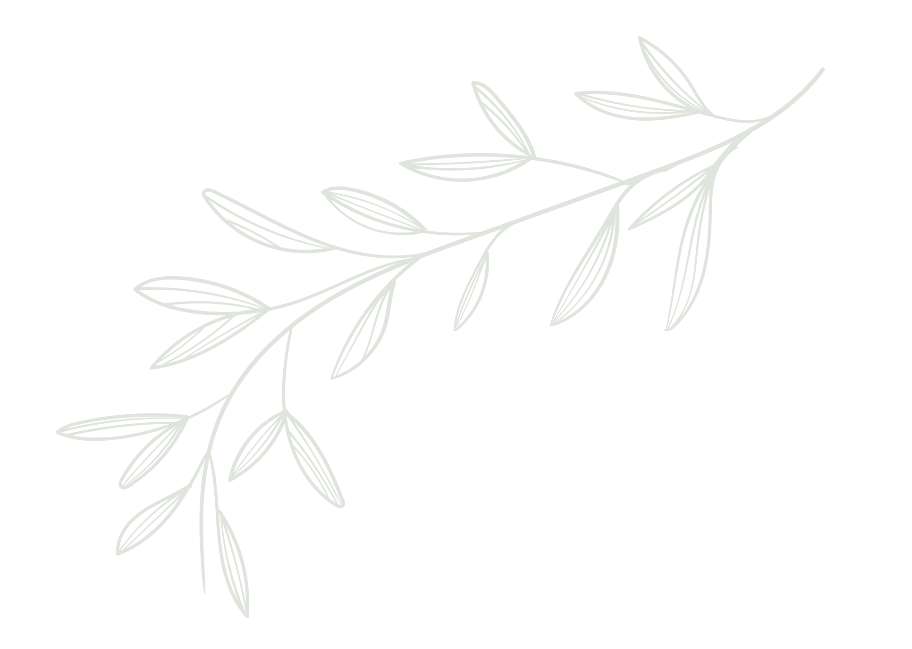

Sacar a flote
La violencia sexual dentro y fuera del conflicto armado se presenta como una expresión de poder en un orden social patriarcal. Para comprender la violencia sexual como estrategia de guerra por parte de diferentes actores en el marco del conflicto, se hace necesario reconocer también el sistema de valores, normas y creencias sociales que la perpetúan en espacios cotidianos y que se traducen en impunidad y silenciamiento.
Los ciclos que no se rompen
A lo largo de la historia, las mujeres y niñas han sido las más afectadas por el despliegue de poder basado en el sexo y el género, en todos los ámbitos de la vida pública y privada. Sin embargo, los hombres y niños también han sido objeto de estas violencias. Aunque la violencia sexual se ha presentado en diferentes etapas de la vida de las víctimas, de manera más frecuente, las mujeres han sido victimizadas durante su juventud, mientras que en los hombres ha sido sobre todo en la niñez (CEV, 2022)
Las violencias sexuales responden a un orden social patriarcal y de heterosexualidad dominante. Como lo han expresado integrantes de la RMVP, "la violencia sexual no fue inventada por la guerra", por ello, su existencia en espacios de la vida cotidiana como la familia o la comunidad son un reflejo de ese orden social. En estos espacios se suele señalar a las víctimas e incluso se llega a justificar lo ocurrido.
"Yo creo que tenemos que aprender que en los hogares tambien se vive mucho la violencia sexual, desde niñas. Yo fui violada a mis 4 años y al día de hoy, a mi edad no lo puedo olvidar. Sé que se puede sanar pero no olvidar, aunque somos guerreras y valientes y sacamos fuerza para seguir adelante, lo mejor es cambiar a las nuevas generaciones, enseñarles que eso no puede volver a pasar (...) cuidar a los que vienen"
(Testimonio mujer integrante de la RMVP, 2022)

Carta 26, Integrante RMVP Carta, escaneada, 2022
Carta 26, Integrante RMVP Carta, escaneada, 2022
"Es muy importante que existan los talleres con nosotras las víctimas por supuesto. Pero necesitamos encontrar una forma de concientizar a los niños y a los sy hombres sobre el respeto del cuerpo a la mujer, y para que no les pase a las nuevas generaciones de mujeres lo que en nuestra generación nos tocó vivir. Y puede ser en los colegios, pero también tiene que ser en el hogar donde los papás no les enseñen a sus hijos ideas machistas, ni se rían con cosas que hagan. Por ejemplo, si le tocan la pierna a una niña, esas cosas en las casas deben enseñarlas, cambiarlas
(Testimonio mujer adulta mayor integrante de la RMVP 2022)
Roles que oprimen
Los patrones sociales sobre los que se cimenta la violencia sexual en la cotidianidad se han trasladado al escenario de la guerra. Por un lado, aparece la “masculinidad guerrera” o “masculinidad despótica” que ha justificado el uso de la fuerza y el ejercicio de poder por parte de los grupos armados. Y por otro lado, se encuentra la idea de “lo femenino” como algo desvalorizado que se expresa a través de diferentes formas de violencia en el marco del conflicto armado.
Los hechos de la violencia sexual se basan en ideas sobre el género y percepciones de la feminidad que terminan avalando un modelo de masculinidad violenta y opresiva, la cual, subordina a las mujeres y rechaza todas las formas no normativas de construir y vivir el género y la orientación sexual (CNMH, 2021).
Telar Memorias Censuradas Integrante RMVP Fotografía digital, 2022
Testimonio sobre telar memorias censuradas Integrante hombre RMVP Audio, 2022

Fotografía de Zamira en su adolescencia Integrante RMVP Fotografía escaneada, 2022
"Yo en mi pueblo conocí a un chico que era gay y lo reclutaron a la fuerza para las filas. Duró bastante tiempo en las filas, pero cuando se enteraron de que él era gay por no asesinarlo lo dejaron ir Pero tenía que quedarse en la zona, no salirse para la ciudad. Y el chico se acostumbró a raspar hoja de coca, llegó a cierta edad en donde él era uno de los mejores raspachines, como se les dice, era muy bueno para ese trabajo, y lo contrataban en las fincas. Hasta el día que nos desplazaron, y desplazaron a todas las personas que eran de la población LGBTIQ y en esos cayó él, hoy en día no sé nada de él, lo único que sé es que se volvió una chica trans, y que tiene su peluquería, pero nunca más volví a tener contacto con él"
(Testimonio hombre integrante de la RMVP, 2022)
Escrito de Zamira en su adolescencia Integrante RMVP Carta escaneadas, 2022
Una guerra que se agudiza en el cuerpo
La violencia sexual en el marco de los conflictos armados se concibe como un crimen de guerra y una infracción al Derecho Internacional Humanitario, es decir que, constituye una violación a los derechos humanos y un delito que debe ser perseguido, investigado y sancionado por el Estado. Tratándose de una práctica persistente en las dinámicas del conflicto armado en Colombia, todos los actores han sido responsables: guerrillas, paramilitares, fuerza pública y grupos posdesmovilización. Ya sea por un objetivo estratégico u oportunista, la violencia sexual en el marco del conflicto armado ha tenido diversos efectos sobre los cuerpos de las víctimas, tanto civiles como combatientes (CNMH, 2018).
CIFRAS DEL OBSERVATORIO COMO PIEZA
Cifras del observatorio: Total víctimas entre 1958 y 2021. Lugares de prevalencia. Presunto responsable Título en cursivas Autor(es)
"El conflicto armado no se inventó la violencia sexual, eso viene desde muy atrás, desde los hogares, la sociedad"
(Testimonio mujer integrante de la RMVP, 2022)
Cartografía 01 Integrante RMVP Cartografía, fotografiada, 2022
Cartografía 01 Integrante RMVP Cartografía, fotografiada, 2022
"Algunas personas creen que la guerra sólo es desplazamiento, (...) pero también es violencia sexual, asesinato, despojo, dolor…" (Testimonio mujer integrante de la RMVP, 2022)
Nuestros cuerpos no son invisibles
Para entender la violencia sexual dentro y fuera del conflicto armado es importante partir de los impactos diferenciales sobre las víctimas, según su género, pertenencia étnica, poblacional y territorial. En definitiva, en el marco del conflicto “la violencia sexual no ha sido ejercida de manera homogénea sobre todas las personas, comunidades o poblaciones” (CNMH, 2017) Los relatos y memorias de las víctimas de violencia sexual ayudan a reivindicar su rostro, singularidad y subjetividad.
CIFRAS DEL OBSERVATORIO COMO PIEZA
Cifras del Observatorio: Perfil de las víctimas:
- Género
- Edad o ciclo vital
- Por enfoques diferenciales: étnico, LGBTIQ+, discapacidad
- Ocupación
"Pero en la sociedad, muchas mujeres víctimas no son capaces de romper el silencio porque es muy duro, porque la sociedad lo justifica o la culpable es la mujer por como se viste, por ser mujer y ya. Por ejemplo, nosotras las mujeres negras provocamos y por eso nos pasa eso. Y yo lo critico mucho y se lo digo a funcionarios en la cara. Yo les digo, que a nosotras nos metieron en esta guerra, nos desplazaron, nos sacaron de nuestras tierras, y acá vivimos discriminación y de todo un poco"
(Testimonio mujer integrante de la RMVP, 2022)
Cartografía 12 Integrante RMVP Cartografía, fotografiada 2022
"Yo quiero reivindicarme, ya no quiero más el anonimato. Porque yo quiero decirle al mundo, a todas las personas y al Estado que ya no tengo miedo y que esas otras mujeres lo sepan. Necesitamos el -quienes- es decir los responsables de los hechos, e intentar responder la pregunta ¿por qué lo hizo o lo hicieron?. Hablar directamente de lo sucedido sin arandelas"(Testimonio mujer trans integrante de la RMVP, 2022)
Cartografía 14 Integrante RMVP Cartografía, fotografiada 2022
"Nosotras somos indígenas Wounaan. Y en nuestra comunidad las mujeres no pueden hablar en la ciudad, porque no saben español y no pueden expresarse. Yo llegué y estoy aprendiendo con las mujeres de la Red, antes yo no entendía español. Antes yo era calladita, y pensaba cómo iba a contar lo que me pasó. Y me daba miedo, pero se me está quitando el miedo para defender la comunidad. Por eso, cuando llegan los armados a la comunidad y nosotras ya podemos expresarnos, y las mujeres hablan un poco más, entienden español. Los hombres en la comunidad tienen que aprender también a respetarnos a nosotras también. Y las mujeres indígenas debemos aprender a reclamar los derechos" (Testimonio mujer indígena integrante de la RMVP, 2022)
Cartografía 11 Integrante RMVP Cartografía, fotografiada, 2022
"Hay mucho riesgo de invisbilización de la violencia sexual en hombres: Si se invisibiliza en el caso de las mujeres, en los hombres mucho más, porque a los niños, jóvenes y hombres adultos los grupos armados nos han sometido la violencia sexual porque así no somos capaces de hablar, porque nos da vergüenza" (Testimonio hombre integrante de la RMVP, 2022)
"Me dijo que lo que me habían hecho era por ser marica, que la violación era mi castigo y que por mi condición me iban a picar; que las personas como yo solo merecían la muerte " ("Hombres que rompen el silencio": Informe sobre víctimas masculinas de violencia sexual en el marco del conflicto armado colombiano. Comisión para el Esclarecimiento de la Verdad, la Convivencia y la No Repetición. 2021)
Contar una y otra vez sin ser escuchadas
Las dimensiones e impactos de la violencia sexual en las trayectorias de vida de las víctimas siguen siendo mayormente invisibles para la sociedad, aun en medio de los procesos de justicia transicional y restaurativa. A pesar de que en la actualidad existe una mayor conciencia respecto a este delito, las víctimas de violencia sexual han expresado frustración y desgaste emocional frente a la poca efectividad y la revictimización de los sistemas judiciales y administrativos encargados de investigar y reparar.
Incluso en instancias de investigación y determinación de responsabilidad judicial por parte de integrantes de los grupos armados no se ha admitido que esta práctica hizo parte de sus estrategias de guerra. En algunos escenarios judiciales han llegado a afirmar que obedeció a una práctica aislada e individual. Por tal razón, diversas víctimas han atribuido responsabilidad al Estado, en tanto se han sentido revictimizadas y desprotegidas aún estando dentro de las rutas de atención para las víctimas.

Cartografía 02 Integrante RMVP Cartografía, fotografiada, 2022
"Las instituciones contribuyen al silencio y la impunidad, la Fiscalía, los funcionarios no nos creen y por el contrario, justifican lo que nos pasó” (Testimonio mujer integrante de la RMVP, 2022)

Cartografía 10 Integrante RMVP Cartografía, fotografiada, 2022
"Al principio no denuncié para que no me revictimizaran, por temor, pena, por no tener que sufrir injusticia testimonial, para que no me señalaran. Mucho tiempo después accedí, pero he encontrado tropiezos porque la justicia no ha sido eficiente, efectiva ni eficaz. Son pocas las víctimas que tienen la oportunidad de acceder de manera rápida y efectiva, por eso queremos que la JEP (Jurisdicción Especial de Paz) abra el macro caso en violencia sexual ya" (Testimonio mujer integrante de la RMVP, Taller de creación de cartografías del cuerpo, S.F.)
Carta 6, Integrante RMVP Carta, escaneada, 2022
Imposición del silencio
La estigmatización y el señalamiento a las víctimas son de los mayores obstáculos frente a la denuncia. En muchos casos, las propias familias y comunidades son las que les acusan de haber propiciado estas violencias, recurriendo a los discursos de justificación y aceptación social del delito.

Cartografía 08 Integrante RMVP Cartografía, fotografiada, 2022
El silenciamiento como estrategia de guerra Integrante RMVP Audio, 2022
"Silenciar a la persona es acabar con su dignidad" (Testimonio mujer trans integrante de la RMVP, 2022)
 


